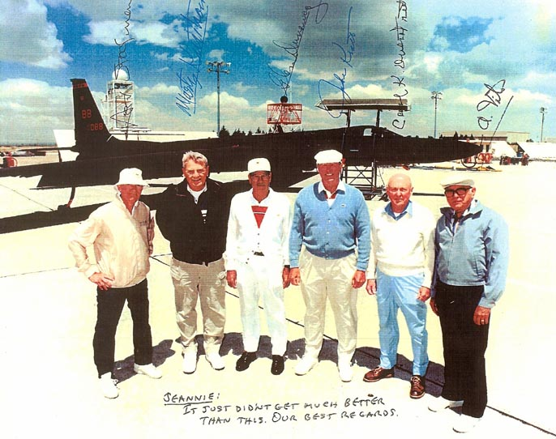

In the early 1950s, US planes were conducting low-flying recon missions over the USSR. But there were constant worries of them being spotted and shot down.
So … in 1954, President Eisenhower authorized the development of a top secret, high-altitude recon aircraft Dubbed Project Aquatone. The program required a remote location that wasn't easily accessible to civilians or spies. Area 51 fit the bill perfectly.
It was in the Nevada desert near a salt flat called Groom Lake. No one knows exactly why it's called Area 51, but one theory suggests it came from its proximity to the Nevada Nuclear Test Sites. The Nevada Test Site was divided into number-designated areas by the Atomic Energy Commission. The location was already familiar territory for the military, as it had served as a World War II aerial gunnery range.
The pilots in the photo above were the first six CIA U-2 "Drivers" forming Detachment "A" at Watertown, NV, aka: Area-51's Groom Lake circa 1955. Photo was taken at Palmdale, CA in 1994.
In the summer of 1955, sightings of "unidentified flying objects" were reported around Area 51. That's because the Air Force had begun its testing of the U-2 aircraft. The U-2 can fly higher than 60,000 feet. At the time, normal airliners were flying in the 10,000 to 20,000 feet range. While military aircraft topped out around 40,000 feet. So if a pilot spotted the tiny speck that was the U-2 high above it, they would have no idea what it was. And they would usually let air traffic control know someone was out there. Which is what led to the increase of UFO sightings in the area. While Air Force officials knew the UFO sightings were U-2 tests, they couldn't really tell the public. So they explained the aircraft sightings by saying they were "natural phenomena" and "high-altitude weather research."
The testing of the U-2 ended in the late 1950s; but, Area 51 has continued to serve as the testing ground for many aircraft, including the F-117A, A-12, and TACIT BLUE.